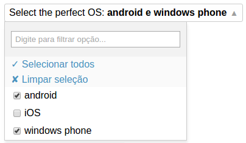

Super Select
This react component is like a select, but with some additional features. Is similar to the button used by Atlassian on bitbucket and jira.
Demo
JS Bin on jsbin.comFeatures
- Support for single ou multi selection;
- Support for linkedState;
- Fuzzy search (using fuse.js);
- Customizable.
Install
Install form NPM:
$ npm install super-selectNow you can use like this:
var ReactDOM = require("react-dom");
var SuperSelect = require("super-select");
ReactDOM.render(
<SuperSelect
label="Choose an option"
options={ [{value: 1, label: "Option A"}, {value: 2, label: "Option B"}] }
/>,
document.body
);Props
label
Type: string | required
The first component of Super Select that users see is the label.
Basically, is the text that appears on the button that users must to click to access the other options.
noLabels and maxLabels
noLabels | type: boolean | default: false
maxLabels | type: number or boolean | default: false
Super Select can display the selected items after the label:

If you want to disable this feature, set noLabels to true. To limit the number of options displayed, set the maxLabels to this number.
options
Type: array
Options is an array of options for the Super Select. Must be an array of objects with label and value properties.
labelKey
Type: string | default: label
If your options have different property for the label, you can specify it with this prop.
Attention: for now super select does not support nested or multiple properties.
valueKey
Type: string | default: value
If your options have different property for the value, you can specify it with this prop.
Attention: for now super select does not support nested or multiple properties. Remember to specify a property that has an unique value in the collection.
multiple
type: boolean | default: true
Defines if user can select one or multiple options. If multiple is true, each option will have an checkbox. Else, will be a radio input.
value
Type: array or object | required
This is the value for the super select.
If multiple is true, you must provide an array with the selected objects. Else, you must provide a single object.
In both cases, each selected object must have at least the value property (or what you specified on valueKey).
valueLink
Type: object
You can use linkedState with super select if you want.
onChange
Type: function | required
The callback to be called when user change the selection.
optionRender
Type: function
Super Select display each option with a combination of a checkbox/radion input and a text. If you want to change this behavior, provide a function that returns the element that you want to display.
Super Select will call this function for each option in the list and pass a context parameter with all the information that you need to know about each option.
The properties are:
| property | type | description |
|---|---|---|
| index | number |
index of the option on options array |
| option | object |
current option |
| pseudoHover | boolean |
users can navigate between options with the arrows keys. Super Select stores the current position of the navigation on an internal state. This property tells you if the current option is the current position or not. |
| checked | boolean |
is true if this option is selected |
| onChange | function |
by default, Super Select adds an handler for the onChange event of the checkbox/radio input. This function is the event handler and you have to call it by yourself when you customize the option passing the option as the first parameter. |
| labelKey | string |
the same value as labelKey prop that you specified. |
| multiple | boolean |
the same value as multiple prop that you specified. |
Example:
content
On the basic usage of super select, you provide an array of options and the component build a list with a lot of checkboxes and text. It will behave like a select. But sometimes you want to display something else. Using the content prop you can do that, so Super Select behaves like an drop down.
You can display what you want, like an image, multiple related inputs or other components.
Let’s see an example:
contentLabelProvider
When you use the content prop, Super Select has no way to know what is selected or not (if you have another input as content, for example). So if you want to display the selected items next to the label, as it does on the basic usage, you can pass a function as contentLabelProvider that Super Select will call when it needs tha updated value to show on the component button.
searchBox
Type: boolean | default: true
Defines if the search box must be displayed or not. Is true by default.
searchKeys
Type: array | default: ["label"]
Super Select uses fuse.js to perform the search. You can specify on which properties fuse.js will look for the query.
actions
On the basic usage, Super Select has a simple menu with two options: select all and unselect all.
With the actions prop you can add other options to that menu. Normally this actions will not impact on Super Select, but on the parent component.
actions must be an array of objects with the following props:
| property | type | description |
|---|---|---|
| handler | function |
handler for the click event |
| label | string |
the text that will be displayed |
| content | element |
if your action has a more complex structure, like an icon with the text, you can provide an element in here instead of label. |
Todo
- Tests
- i18n
- Groups of options
- Support remote data
- Allow users to configure fuse.js
Written with StackEdit.